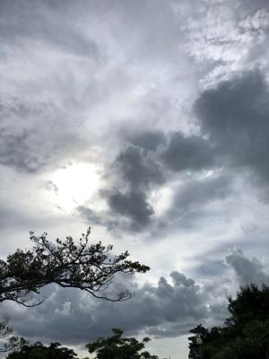
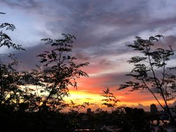
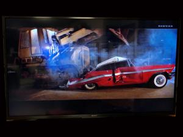

うるがいの話 ある日
最新: アクシデント【うるがいの話 ある日】とは 一日だけのプログです
『うるがいの話』の最新一日だけのプログで、通信料が少なく経済的だ。カニの画像をクリックすると全ての日付が載る『うるがいの話』サイトを表示します
|
|
【うるがいの話】 うるがい(ｳﾙｶﾞｲ urugai)とは、『もずくがに』の名前でとても大きくなります。 |
|---|---|
|
|
【カミマヤーの話】 猫のことを方言でマヤーといいます。カミマヤー（kamimayaa）とは、神の猫のことです。 |
|
【たながぁの音楽】 たながぁ（ﾀﾅｶﾞｰ tanagaa）とは手長えびのことで、何種類かあり大きいのは車 エビぐらいになります。 |

|
【ぶながぁの話】 ぶながぁ(ﾌﾞﾅｶﾞｰ bunagaa)とは、赤い髪の毛、赤い身体、そして身長は１ｍ２０ｃｍ ぐらい、川の蟹を食べているの目撃された。場所は沖縄県国頭郡大宜味村のと ある村僕の隣近所に住んでいる爺さんから、聞いた話です。 |
|
|
【ギーマの話】 ギーマ(giima)とは、山原の里山に咲くスズランに似た、 花を付けます。実は食べられます、 気が付くと口の周りが紫になっています。 |
2022年07月30日 (土）アクシデント
16:06
  
３級映画『クリスティーン』ブルトーザで、車を潰していくシーンを見た。程
度差はあるが、あれと同じだ。２００８年の暮れ、年末掃除をして出て来たゴ
ミをカローナに詰め込み、那覇・南風原クリーンセンターへの一般廃棄物持ち
込みを行うために施設の中に入っていったところ、間違った施設のビルに入り
込んでしまった。そこには、小さめのブルトーザを運転している人がいた、車
を止め正しい施設を尋ねようとしたとこころ、私からみて反対方向にいたブル
トーザはバックをし始めた（運転している人は、私に気づかない！）。私は焦
って運転手にかけより声をかけるが、ブルトーザの騒音が大きく、運転手は気
づかない、やがてブルトーザはバックしたまま、私のカローナの正面にぶつか
り、そのとき初めて運転手が車の見た。パニックになった私は、バンパーが外
れたカローナをそのまま、修理のためトヨタ自動車の販売店に持ち込んだ。こ
の年は母親と一番下の妹を亡くし、その妹の旦那の父親の畑で、殺人死体遺棄
事件が起きたとんでもない年だった。
１６時０２分 ビットコインの総資産 ￥９、１９９↓